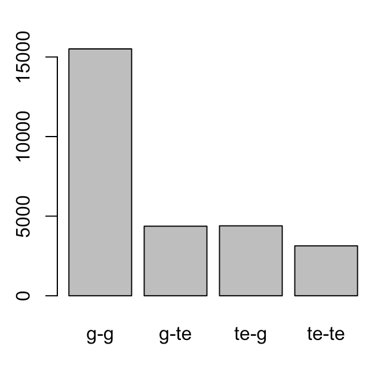
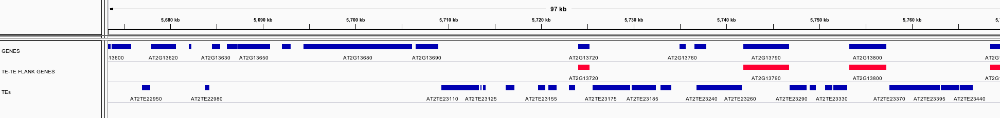

Tim Stuart has provided new files to attempt the trans TE-DMR analysis for his manuscript. Previously, both TEPID insertions and deletions were combined into a 'TE_poly' file containing both types of elements. However, further analysis by Tim has indicated that it may be worthwhile to look at these two types of variants seperatly. Beyond this, there was an issue with the methylation DMR files indicating no coverage as a value of 0, which could seriously screw things up.
Therefore, I am revisiting the TE-DMR trans association analysis and performing it four times for these datasets:
Tim has provided new files for methylation c_dmr_allC.tsv and cg_dmrs_allC.tsv as well as new dataframes of TE insertions TE_insertions_matrix.tsv and deletions TE_deletions_matrix.tsv
All code and results for each analysis are found in their respective folder and TIM_TRANS_ANALYSIS_JULY2016.html file.
To begin, dataset accessions are confirmed identical resulting in 136 accessions. We trim this down to 124 accessions that were identified in the TE-to-SNP LD analysis to eliminate some of the populations structure found across these accessions.
TE variants are subset to only those 'common' variants with a minor-allele-frequence > 3% (4 accessions). This substantially cuts down on the number of TE variants that we can test:
| TE set | raw variants | >3% MAF | proportion kept |
|---|---|---|---|
| insertions | 15077 | 2782 | 0.185 |
| deletions | 5856 | 2859 | 0.488 |
We can also calculate the FDR for each of these association tests by counting the number of associations above our 1% permuted data threshold as so:
(count above real - count above perm) / (count above real)
Which gives us....not the best FDR in the world:
| FDR % | individual r2 values | sum r2 values | individual binary states | sum binary states |
|---|---|---|---|---|
| C_ins | 14.38 | 87.77 | 14.38 | 77.77 |
| C_del | 17.17 | 87.65 | 17.16 | 81.29 |
| CG_ins | 7.55 | 52.54 | 7.55 | 21.62 |
| CG_del | 10.27 | 47.27 | 10.26 | 25 |
Even so, we can get a count of our punative trans-associated TE variants for each contrast:
| possible trans Tes | count | max DMRs it hits | max %DMRs it hits |
|---|---|---|---|
| C_ins | 126 | 526 | 3.901 |
| C_del | 155 | 457 | 3.389 |
| CG_ins | 37 | 2021 | 5.019 |
| CG_del | 40 | 2395 | 5.948 |
So if I'm honest, I think we don't really have any evidence of trans bands. In fact, if we look at the plotted heatmaps it is much harder to identify the cis-band going up the diagonals of the C DMR set.
If anything, we see lots of horizontal bands, which may indicate that we would need to do some heavy filtering of the Schmitz DMR calls in order to try and clear things up. I'm not sure how to best approach that however.
There are some revisions to be done in regards to the Brachypodium distachyon reference methylomes manuscript. I am trying to organize my thoughts and scripts to have a clearer picture of exactly what is being done and where any new analyses will fit in:
In the end what I, and everyone else, should be doing is identifying the time in which a manuscript will be created and directly begin organizational steps in order to prepare for publication and reproducibility.
There are key steps to making this a reality
Start by uploading any created sequencing data to a public repo EARLY ON. By doing so you have completed one of the most annoying steps of any genomic paper prep. A specific benifit of doing this early on is that you can develop your analysis scripts to start directly from pulling sequence data (e.g. from the SRA). If you are smart you can create scripts that can flag off this step for subsequent analyses when you have the sequencing data in hand (the same holds true for any time-consuming steps such as read alignment).
Keep an up-to-date tab on any third-party data that is used within your analyses. Everythign we do often builds on other labs data, or other public annotation information that is associated with your experimental system. This includes reference genome(s), gene annotations, and other public annotations which may be used within your analysis. By knowing what version as well as the public location of such data (TAIR, Phytozome, genome connsortium, etc) you will make your own life, and others reproducing your results, easier.
Timestamp everything. Analysis often beings in a 'dirty phase' of analysis with rapid testing and code/plots/data tables that are good, bad, and ugly. Often you begin building off of these for downstream steps. You often never know that a specific step or output will make it out of this phase. Devise a clear timestamp method for any output of any script. This allows you to keep track of when certain files were made, and forces a clear naming convention for your own sanity.
Try to get as close to final publication figures from first output. From my experience, the effort you put into a 'final' figure is often left behind when the 'final' figure is no longer actually final. There are often changes, edits, tweaks that may require a new primary figure or plot to be developed which is not always easy to slot into the edited manuscript figure. I have often spent a fair amount of time in Illustrator getting things just right only to have a plot.v3USETHISONE.pdf get spit out right at the end requiring an additional round of finalization for publication. This is inevitable as far as I can tell. Therefore, taking the time to make your plotting software (ggplot is my go to) get as close as possible to what you want in the end. This includes colors, legends, labels, font sizes, etc. The more you can code into your scripts, the easier it will be to deal with any last minute changes.
When you have completed all of this, make sure the first steps of the script highlight the required software, libraries, and disk space needed to make things work. If you make it this far, you may just have a script which will generate everything you made. Well done! However, take the time to clearly identify the specific software and libraries required for your scripts to work. Best practices would also include the specific versions of all items that you used as they seem to change and break things quite often.
My personal goal would be to develop a series of scripts in which with the scripts alone it would:
This is much easier said than done. I have yet to personally meet this goal. I imagine that this level of organization requires one to accept that you will get so far with first-pass analyses and developing your results, then have to start from the beginning with this organization in mind. Things should move faster at this point because you know where you are headed (rather than in discovery phase).
I have also been continuing to try and find the best method for pulling scripts together to include code for all aspects of the required software. I often move from bash scripts to R, back to bash, and sometimes others which would require a more unified method. Right now I often develop R scripts with commented out bash code which I manually execute while walking through the script. I don't like doing this and either would any person trying to re-develop your results and analyses.
I imagine that beyond this would be a magical world of VMs that someone could spin up to do all of this in the cloud, however I'm still focused on these baby steps.
Trying to understand Probability Theory - The Logic of Science by E.T. Jaynes
vs
Laplace
Inference (Fisher & Pearson)
Bayesian statistics
Given all of this, what exactly is probability in the real world?
'A degree of belief' - something we all have
Is probability forwarding looking and statistics backward looking?
in this book, Jaynes frames probability as an extention of LOGIC specifically. We are reasoning with incomplete information. We can get Kolmogorov axioms as a derivitive of logic. From this, the separation of probability vs statistics dissapears. Also destroys frequentist ad hoceries and methods as a fundamental misunderstanding of probability.
In doing so, Jaynes shows that a subjectionist view allows for more powerful statements.
Hypothesis to Data (test hypothesis to explain our data) is not good. We want Data to hypothesis (the thing in the real world)
Created folder structure on local machine for IGV sessions for Joanne's methylc-seq data visualizations.
bis snp snp-calling from bisulfite sequencing data for Diep's work.
The alignments of Joanne's Methyl-seq data has been completed on edmund. The summary information is provided below:
| Input fastq | Sample | ref genome | method | bismark ver | samtools ver | total reads | flt reads | % unique aligned | unique map | multi-map | no-map | %CG | %CHG | %CHH |
|---|---|---|---|---|---|---|---|---|---|---|---|---|---|---|
| ColmockC_R1.fastq.gz | Colmock3DAI | ../../genomes/TAIR10/assembly/ | se | v0.13.0 | 1.1-26-g29b0367 | 32705946 | 32652653 | 78.1 | 25507247 | 1958063 | 5187343 | 23.2 | 7.5 | 2.2 |
| ColFoxD_R1.fastq.gz | ColFox3DPI | ../../genomes/TAIR10/assembly/ | se | v0.13.0 | 1.1-26-g29b0367 | 29501104 | 29460765 | 67.6 | 19925070 | 5170754 | 4364941 | 21.8 | 7.0 | 2.1 |
| rddFoxB_R1.fastq.gz | rddFox3DPI | ../../genomes/TAIR10/assembly/ | se | v0.13.0 | 1.1-26-g29b0367 | 29645007 | 29612191 | 67.7 | 20055251 | 5865639 | 3691301 | 23.0 | 7.0 | 2.0 |
| rddmockA_R1.fastq.gz | rddmock3DPI | ../../genomes/TAIR10/assembly/ | se | v0.13.0 | 1.1-26-g29b0367 | 36957919 | 36915555 | 80.1 | 29574380 | 1810380 | 5530795 | 23.6 | 7.3 | 2.1 |
Another important note is calculating the bisulfite conversion rate by looking for methylated cytosines in the chloroplast (which is unmethylated). This can be done via the output files and a bash one-liner:
grep "ChrC" *CHH.bed.bismark.cov | awk '{ met+= $5} { unmet += $6} { total = met + unmet } END {print 100-((met / total)*100)}'This results in the folowing conversion rates (higher the better):
| Sample | Conversion Rate (%) |
|---|---|
| Colmock3DPI | 99.6488 |
| ColFox3DPI | 99.6395 |
| rddmock3DPI | 99.6367 |
| rddFox3DPI | 99.6164 |
So overall, it looks like conversion rate will not be a problem with this dataset. Although one can correct for it, it would make minimal difference with these rates.
We can also look at global methylation levels to determine if there are any clear differences across samples.
Start by pulling together base-pair resolution data for the four samples into a single file in R:
context=c('CpG','CHG','CHH')
for(i in 1:3){
out=NULL
files=dir(pattern=paste('*',context[i],'.bed.bismark.cov',sep=''))
input=read.delim(files[1],head=F)
colnames(input)[4:6]=paste(files[1],names(input)[4:6],sep='')
for(q in 2:length(files)){
add=read.delim(files[q],head=F)
colnames(add)[4:6]=paste(files[q],names(add)[4:6],sep='')
input=merge(input,add,by=c('V1','V2','V3'))
}
write.table(input,paste(context[i],'_allsamples.cov',sep='\t',row.names=F,quote=F)
}Ran 100bp DMR caller for CG, 60% difference, 10coverage and at least 3 sites in the window.
Also did CHG 40%; CHH 10%
Have to do some serious filtering
Today I am attempting to make an annotation file of TAIR10 genes that have a flanking TE. This is to better define genes that fall on a euchromatin / heterochromatin boundary within the genome. I will also add information regarding orientation of chromatin in relation to the geen (5prime / 3prime / strand).
My first attempts have used the TAIR10_gene.bed and the TAIR10_transposable_element.bed files, however I kept getting a Segmentation Fault when running on edmund. So, I will attempt it on my own laptop to see if results change:
I still get segmentation faults after 12,957 lines when running:
closestBed -iu -D ref -a TAIN10_transposable_elements.bed -b TAIR10_gene.sorted.bedPerhaps bedops will get the job done by giving the closest upstream and downstream elements. I can further require that it does not report overlaps via --no-overlaps and also report back the distance for each --dist. So, I could take all TAIR10 genes and map them against a file that contains all TAIR10 genes as well as all transposable elements:
closest-features --no-overlaps --dist --delim '\t' TAIR10_gene.sorted.bed TAIR10_gene_te.sorted.bed > test.outputThis reports out a bed-like file that contains:
These sections are all seperated by tabs as specified in the --delim '\t' flag
Need to make sure that the TE and gene files that are combined contain the same number of columns. Added two columns of NA to the gene file to match the number found in the TE file.
gene=read.delim('TAIR10_gene.sorted.bed',head=F)
out=cbind(gene[,1:7],rep(NA,nrow(gene)),rep(NA,nrow(gene)))
write.table(out,'TAIR10_gene.sorted.forcomb.bed',sep='\t',row.names=F,col.names=F,quote=F)
cat TAIR10_transposable_element.bed TAIR10_gene.sorted.forcomb.bed > TAIR10_gene_te.bed
sort-bed TAIR10_gene_te.bed > TAIR10_gene_te.sorted.bed
closest-features --no-overlaps --dist --delim '\t' TAIR10_gene.sorted.bed TAIR10_gene_te.sorted.bed > test.outputWe can now go look into this bedops output to see the results:
data = read.delim('test.output',head=F,sep='\t')
#genes with nothing upstream are writted out with NA
#however it does not match full formatting.
#Therefore, we can pull these columns seperatly.
no.upstream=subset(data,is.na(data$V9)==T)
both=subset(data,is.na(data$V9)==F)
no.downstream=subset(both,is.na(both$V19)==T)
both=subset(both,is.na(both$V19)==F)
class=paste(both$V13,both$V23,sep='-')
both=cbind(both,class)
out=subset(both,both$class=='transposable_element-transposable_element')
oneside=subset(both,both$class=='transposable_element-gene' | both$class=='gene-transposable_element')
write.table(out,'TAIR10_tete_gene.bed',sep='\t',row.names=F,quote=F,col.names=F)
write.table(oneside,'TAIR10_teoneside_gene.bed',sep='\t',row.names=F,quote=F,col.names=F)Of the 27,404 genes with calls on both sides, just over half (56%) are flanked by other genes: 
So I think that the file contains only protein coding genes. No TE genes, no pseudogenes, tRNAs, etc.
From this, we see that although overal gene density decreases near the centromers (TE-rich regions), that is largely where we find genes with a TE flanking both sides:
A local view to highlight it: 
The output file has been creaed as TAIR10_tete_gene.bed containing 3134 genes along with a file of genes with TEs flanking one side in TAIR10_teoneside_gene.bed containing 8762 genes.
Today I have attempted to align Joanne's bisulfite sequencing data of 3DPI Col-0 and rdd mutants for both mock and control samples. This data has been passed to myself and Peter Crisp, along with sRNA sequencing data (1/3/6 DPI) and mRNA-seq (3 DPI) data.
The fastq files have been passed via my processing script as single-end sequencing reads:
/home/steve/scripts/wgbs_pipelinev0.4.sh -se <input fastq> ../../../genomes/TAIR10/assembly/ <outname>